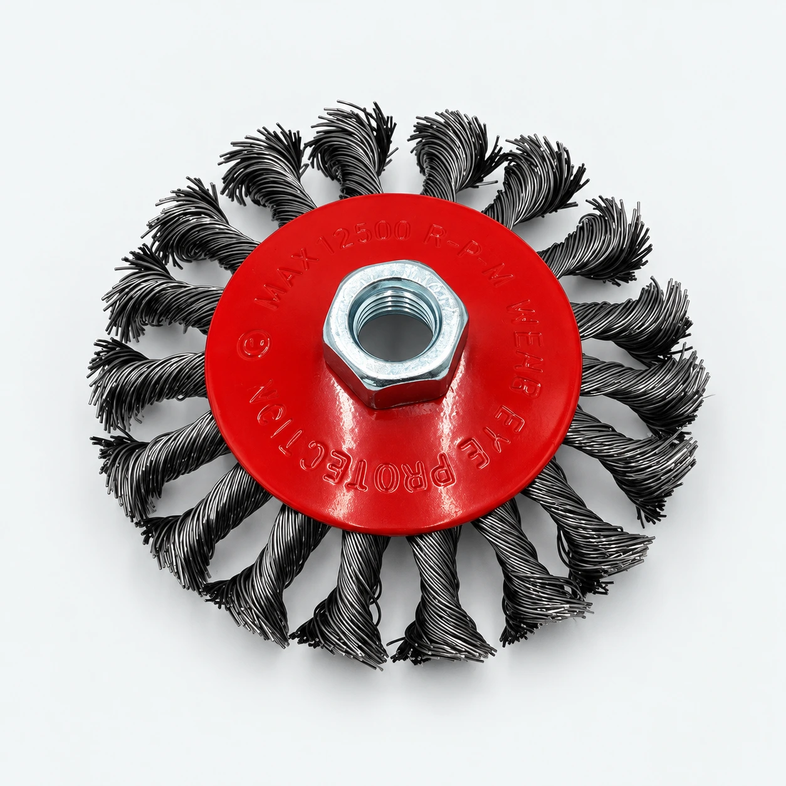

Steel Wire Wheel Brush Manufacturer for Wholesale and OEM Orders
YEKAI manufactures steel wire wheel brushes in Yongkang, China, for importers, distributors and tool wholesalers. Choose from crimped and twisted wire designs, then confirm the dimensions, wire material and mounting specification for your market.
Discuss your requirements on WhatsApp ↗
Steel Wire Wheel Brush Specifications
Crimped and Twisted Wire Designs
Compare crimped wire wheels, knotted wheels and narrow stringer designs in our catalog. Select a construction suited to the required cleaning action and access around the workpiece.
Diameter, Wire Material and Mounting
Specify outside diameter, face width, wire diameter, wire material and bore or thread. Include the machine model and operating speed so the mounting and rated speed can be checked before an order is confirmed.
Wire Wheel Brushes for Metal Surface Preparation
Rust, Paint and Scale Removal
Wire brushes are used in surface preparation to remove loose rust, coatings and scale. Choose the brush and wire material for the workpiece; assess a sample under the intended operating conditions.
Selecting a Brush for Your Equipment
Confirm the tool manufacturer permits the attachment, and match the mounting connection and speed rating. Share your working area and desired finish when requesting a model recommendation.
OEM Wire Brush Branding and Packaging
Private Label and Retail Packaging
Discuss your logo, label artwork and market language. Double blister packaging and color boxes can be reviewed against the selected product and order quantity.
Samples and Bulk Order Specifications
Approve the model, sample and packaging details before bulk production. Send a drawing or reference sample for custom requests; feasibility and order requirements are confirmed individually.
Factory Supply for Importers and Distributors
Direct Communication with YEKAI
Work with Frank to align product specifications, packaging and order requirements. Review the product documentation on our homepage for the models and scope covered.
Wholesale Pricing and Production Schedule
Request pricing against an agreed specification and quantity. Production and dispatch dates depend on the selected model, customization and order size; confirm the schedule before placing an order.
Request a Wholesale Quote
Request a steel wire wheel brush quotation with your dimensions, wire specification, mounting type and order quantity. Contact Frank on WhatsApp to discuss samples, packaging and delivery requirements.
Contact Frank on WhatsApp ↗